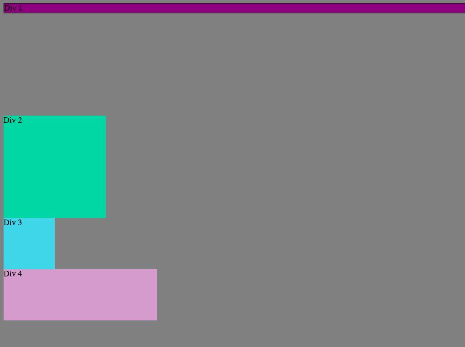
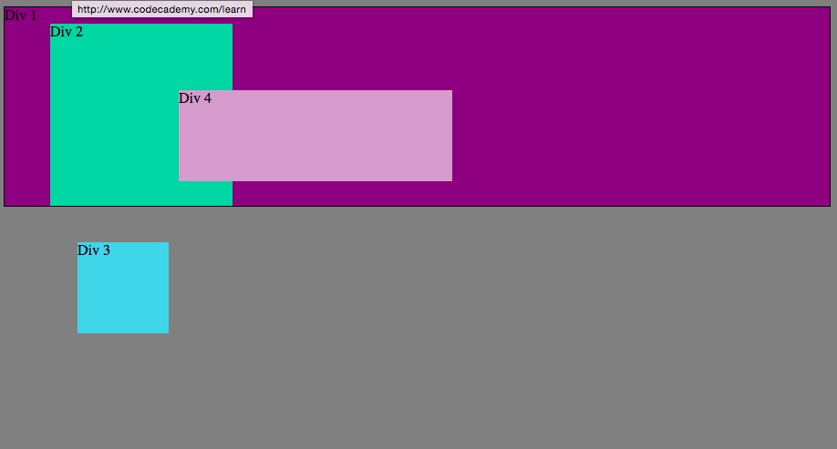
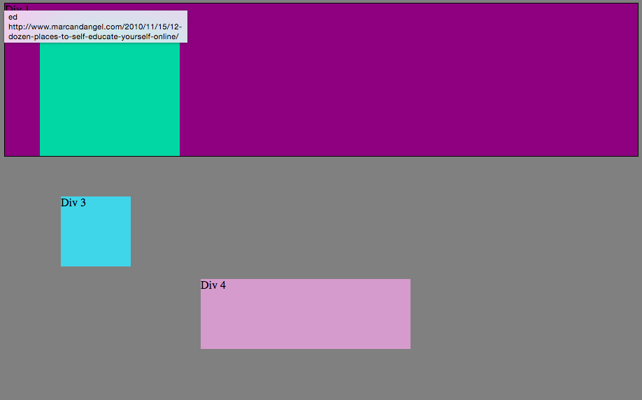

**What are the differences between relative, absolute, fixed, and static positioning?**
I spent a very long time trying to figure this out this week and I feel like I've only scratched the surface. There are a lot of nuances between these four different styles of positioning and it's important to understand that they don't just behave in a predetermined way, they behave in a predetermined way in relation to each other.
When I first set about trying to position elements on my page I expected that I could give them directions and they would appear where I expected them to. WRONG! Not even close! It was like trying to get cats to do what I want. Before understanding how these potitions operate let's start with some basic definitions.
**Static**
Static position is the default poisition of an element in CSS meaning that it will fit into the normal flow of where it occurs in the code of a CSS document. In other words if you created three different static elements, they would line up in a vertical row in the order they were created. They can also be manipulated with displaying them as blocks, inline-blocks or inline, but that's a post for another day. Static positioning will not be affected by commands such as left, right, top or bottom which try to force it into a position. The divs in the following picture were postioned using static positioning.

**Fixed**
Fixed positioning stays fixed in its position on the webpage meaning wherever you scroll, it will stay in the same spot on your screen. To place it where you want it, you can use the left, right, top or bottom commands. An exxample of this would be a header or footer that always stays in one place on your screen as you move around the webpage. It would be like that spot on your glasses that stays in the same spot in your vision no matter where you are looking. In the example below the divs are positioned fixed to each of the four corners of the web page by setting their position to fixed and their attributes for top, bottom, left or right to 0 to correspond to each corner.

**Absolute*
Absolute positioning is positioned relative to the nearest positioned ancestor (instead of positioned relative to the viewport, like fixed). So if an ancestor of an absolute div already exists, the absolute element will take its positioning cues(top, left, bottom, right) in relationship to its ancestor. In the example below the 2nd 3rd and 4th divs are positioned absolute to the first and all inherit from it. Therefore they will all be positioned with div 1 as their starting point. Div 2 has a left property of 50px and so is scooted 50 pixels from the left of the first div. Div 3 has a top property of 240px and so is scooted down 240px from the top of div 1. And div 4 has a left property of 200 px, and is scooted 200 pixels from the left.

**Relative**
Relative positioning takes the normal static positioning and positions it relative to the default. So using left, right, top, bottom will make it relative to where it normally would have been without them. In the picture below all the divs are relative and inherit from one another. In other words they are relative to the previous div. They are all scooted a little to the right and down from the previous div because of their left and top distances.

The kylefantastic Blog

Welcome weary web wanderer to the official blog of Kyle Smith,
web developer extraordinaire. If this is your first time visiting,
perhaps you would like to check out the About Me section to better
understand what I'm all about. Otherwise let's get to the blog.
To the right you will find the navigation to my comprehensive
blog posts, accrued during my tenure as a Dev BootCamp student.
It has been an arduous and edifying journey of ups, downs, and
hard-fought victories. You can literally witness the progress
of the last five months before your eyes (at a much faster pace).